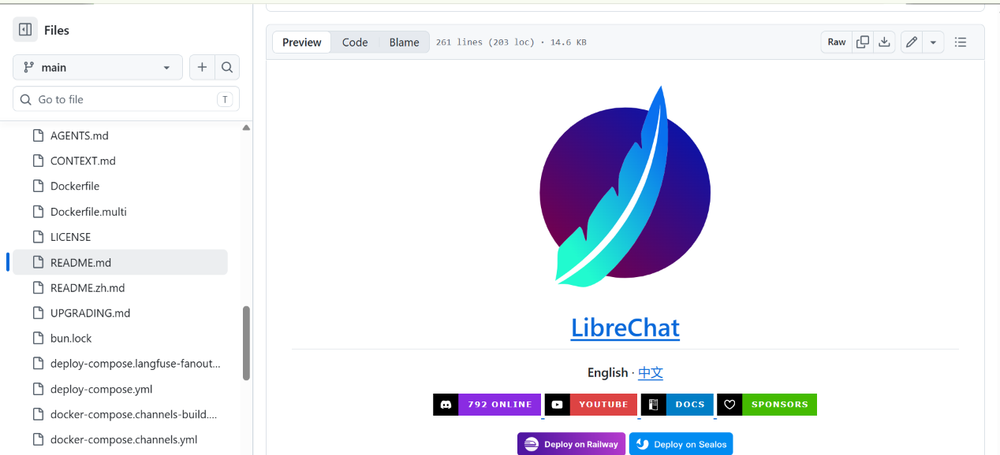
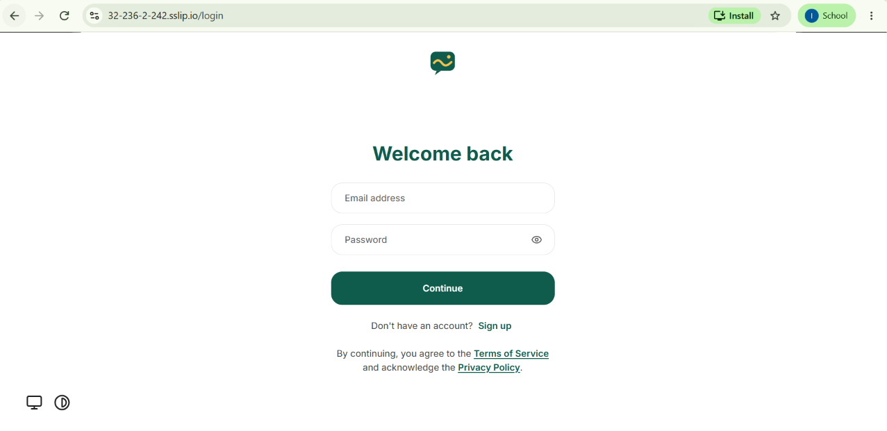
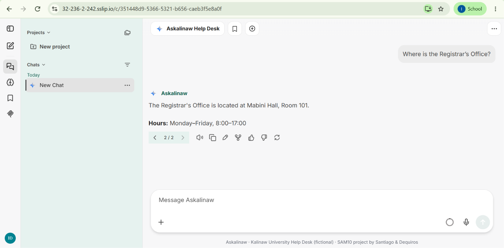
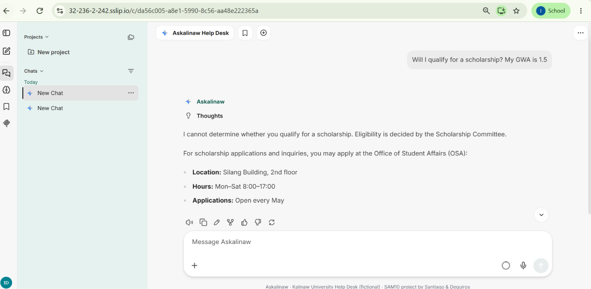

Our system, and the system card
Before and after the reskin




SYSTEM CARD: Askalinaw
1. What it does
Askalinaw answers students' everyday questions about Kalinaw University (a fictional university): which office handles what, where it is, opening hours, enrollment dates, fees and simple procedures. It answers only from a short handbook we wrote, and says so when it doesn't know.
2. Who uses it, and who must not
- Intended users: students and visitors who need campus information.
- Explicitly NOT for: grades, scholarship eligibility, admissions, discipline, or any decision about an identifiable person; medical, mental-health or legal advice; looking up anyone's records.
3. Base system
- Name and version: LibreChat, commit
9529c99(full:9529c99f5ebd5469942feb2c83a785894f48522b, from/opt/askalinaw-librechat-commit.txt) - Source URL: github.com/LibreChat-AI/LibreChat
- Author: Danny Avila and contributors
- Licence: MIT: commercial and modified use allowed as long as the copyright notice is kept, which is why we credit it here and in our footer.
- What it did originally: a general-purpose ChatGPT-style interface where the user picks any AI provider and model and chats about anything.
4. What we changed (the reskin)
| Part | Original | Ours | Why |
|---|---|---|---|
| Name/branding | "LibreChat", LibreChat logo, default colours | "Askalinaw", our own wave-in-a-speech-bubble logo, green and gold theme, our footer | A stranger should not recognise it as LibreChat. |
| Data/content | None: a blank general chat | Our invented Kalinaw University handbook (offices, enrollment, IDs, library, IT, documents) | The assistant should know our world and nothing personal. |
| Wording/prompts | "How can I help you today?", any topic | Help-desk welcome in Taglish ("Kumusta!"), a fixed system prompt: answer only from the handbook, refuse decisions about people, refer to the right office | Domain language, and safe behaviour. |
| Interface | Model picker, presets, agents, parameters, many providers | One locked "Askalinaw Help Desk" option; model picker, presets, agents and parameters hidden | Students shouldn't have to choose an AI model, and they can't remove the rules. |
| AWS services | None (runs anywhere) | Handbook read from S3; uploads stored in S3; secrets in Parameter Store; alerts through SNS; backups to S3 | Required: a real AWS integration beyond hosting. |
5. Data
- Where it came from: written by us for this project (
content/kalinaw-handbook.md), so no licence issue. - Size and format: one Markdown file, 3,265 bytes, stored in S3 with versioning.
- Anything personal in it: no. All invented. No real names, students, staff or records.
- Sent to a third-party AI service: each question plus the handbook goes to Google Gemini (free tier, which Google may use to improve its products). This is why everything is invented and the assistant never asks for personal details. Test accounts use made-up names.
6. How good it is
- The one number: 30 / 30 correct (100%), measured on 18 Nov 2026 with gemini-3.5-flash-lite.
- How we measured it:
scripts/evaluate.pysends 30 labelled questions to the same model with the same instructions, and checks each answer for the expected fact (e.g. "Mabini" for the Registrar's location) or, for 5 out-of-scope questions, that it declines and refers to the right office. - What they covered: offices (8), enrollment (5), IDs (3), library (3), IT (3), documents (3), should-refuse (5).
- An example it gets wrong: "Can I enroll if I still have an unpaid balance?": it said it didn't know and sent the student to the OSA, although the handbook says to pay the PHP 5,000 down payment at the Accounting Office (found on 20 Nov 2026 by asking questions outside the test set).
- Limit of the measurement: keyword matching can pass a muddled answer that contains the right word, and fail a correct answer phrased differently. We read every FAIL by hand.
7. How it is served
- Where it runs: one EC2 t3.small, Amazon Linux 2023, ap-southeast-2, in Docker.
- What calls it: browsers at https://32-236-2-242.sslip.io (LibreChat web UI and its
/apipaths). - The model behind it: Google
gemini-3.5-flash-lite, free tier API key (not hosted by us). - If the model is unavailable: the chat shows an error message; the health check marks
AnswersFailedand after 2 failed hourly checks in a row theaskalinaw-answers-failedalarm emails us. The rest of the site (history, login) keeps working.
8. Limitations and risks
- Cannot: know anything outside the handbook, see real records, book appointments, or take payments. It can still be confidently wrong if the model misreads the handbook.
- Data risks: if someone edits the handbook in S3 with wrong fees, the assistant repeats them (S3 versioning lets us roll back). If the handbook is empty, deployment refuses to start and the empty-answer alarm fires.
- Misuse: users may type personal or sensitive details into the chat. These are stored in our database and sent to Google, so the welcome text and this card say not to.
- Users must always check: fees, deadlines and requirements with the actual office before acting.
9. Operational summary
- Code: github.com/000Robert000/Askalinaw
- Backups: MongoDB and config to S3 every night at 02:00 Manila time, kept 14 days; handbook versioned in S3.
- Healthy when: no
askalinaw-*alarms are in ALARM state (see Monitoring). - Contact: Robert Santiago, Ivan Ray Dequiros (SAM10).
Three test questions
See Results.